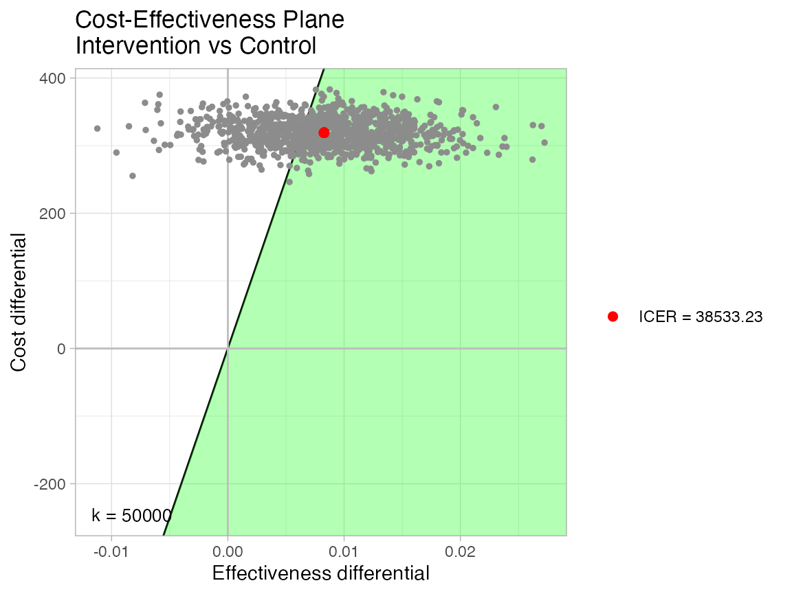

The main motivation behind the youthu package is to extend the types of economic analysis that can be undertaken with both single group (e.g. pilot study, health service records) and matched groups (e.g. trial) datasets that do not include measures of health utility.
To illustrate the input data requirements and the practical application of youthu functions, we adapt a replication dataset from the youthu’s sister package TTU to create synthetic (fake) single group and matched group datasets. To do so, we first make a list object ds_smry_ls that summarises the desired features of these datasets, such as:
ds_smry_ls <- list(bl_start_date_dtm = Sys.Date() - lubridate::days(300),
bl_end_date_dtm = Sys.Date() - lubridate::days(120),
cmprsn_var_nm_1L_chr = "study_arm_chr",
cmprsn_groups_chr = c("Intervention","Control"),
costs_mean_dbl = c(300,1500),
costs_sd_dbl = c(100,120),
costs_var_nm_1L_chr = "costs_dbl",
date_var_nm_1L_chr = "date_psx",
duration_args_ls = list(a = 80, b = 110, mean = 90, sd = 7),
duration_fn = truncnorm::rtruncnorm,
id_var_nm_1L_chr = "fkClientID",
predr_var_nms = c("PHQ9", "SOFAS"),
round_var_nm_1L_chr = "round",
round_lvls_chr = c("Baseline","Follow-up"),
utl_var_nm_1L_chr = "AQoL6D_HU")We pass both the ds_smry_ls summary list and the replication_popl_tb replication dataset to the make_sngl_grp_ds function to create an example single group dataset.
sngl_grp_ds_tb <- make_sngl_grp_ds(TTU::replication_popl_tb,ds_smry_ls = ds_smry_ls)We can split a subset of our single group dataset into two propensity score matched groups - one each for intervention and control - using the make_matched_ds function. We also use this function to build in our assumptions about group differences in changes in PHQ9, SOFAS and costs measured at follow-up. The below example assumes population (not sample) mean change differences between Intervention and Control arms of -2 for PHQ9, -2 for SOFAS and +$300 for costs.
matched_ds_tb <- make_matched_ds(sngl_grp_ds,
cmprsn_smry_tb = tibble::tibble(var_nms_chr = c(ds_smry_ls$predr_var_nms, ds_smry_ls$costs_var_nm_1L_chr),
fns_ls = list(rnorm,rnorm,rnorm),
abs_mean_diff_dbl = c(3,2,300),
diff_sd_dbl = c(2,2,200),
multiplier_dbl = c(-1,-1,1),
min_dbl = c(0,0,0),
max_dbl = c(27,100,Inf),
integer_lgl = c(T,T,F)),
ds_smry_ls = ds_smry_ls)## Joining, by = c("fkClientID", "study_arm_chr")The synthetic matched dataset we generated includes 319 matched comparisons, with each comparison containing baseline and follow-up records for one intervention arm participant and one control arm participant. The first few records are as follows.
matched_ds_tb %>% head()## # A tibble: 6 x 9
## fkClientID round date_psx duration_prd PHQ9 SOFAS costs_dbl study_arm_chr
## <chr> <fct> <date> <Period> <int> <int> <dbl> <chr>
## 1 Participa… Base… 2020-05-22 0S 6 72 590. Control
## 2 Participa… Base… 2020-05-19 0S 2 76 651. Intervention
## 3 Participa… Foll… 2020-08-25 95d 0H 0M 0S 0 80 1378. Control
## 4 Participa… Foll… 2020-08-13 86d 0H 0M 0S 0 81 2126. Intervention
## 5 Participa… Base… 2020-05-10 0S 0 80 412. Control
## 6 Participa… Base… 2020-09-15 0S 1 57 652. Intervention
## # … with 1 more variable: match_idx_int <int>This dataset contains features that make it possible to use in conjunction with youthu’s economic analysis functions. Specifically these requirements are that the dataset must:
The synthetic matched dataset also contains a cost variable, which is a requirement for most, though not all, of the economic analyses that can be undertaken with youthu.
A notable omission from the fake study dataset is any measure of utility. This omission means that, in the absence of using mapping algorithms such as those included with youthu, the most feasible types of economic evaluation to apply to this dataset would likely be cost-consequence analysis (where a synopsis of the differences in a range of measures are presented alongside cost differences for a decision maker to interpret subjectively) and cost-effectiveness analysis (where a statistic - the incremental cost-effectiveness ratio or ICER - is calculated by dividing differences in costs by differences in a single outcome measure).
These types of economic analyses can be relatively simple to interpret if either the intervention or control arm is simultaneously cheaper and more effective across all included outcome measures. However, these conditions don’t hold in our sample data.
## PHQ9 SOFAS
## Min. : 0.00 Min. :38.00
## 1st Qu.: 8.00 1st Qu.:60.00
## Median :12.00 Median :66.00
## Mean :12.49 Mean :65.62
## 3rd Qu.:17.00 3rd Qu.:71.00
## Max. :27.00 Max. :89.00## PHQ9 SOFAS costs_dbl
## Min. : 0.00 Min. :39.00 Min. :1201
## 1st Qu.: 5.00 1st Qu.:64.00 1st Qu.:1429
## Median : 9.00 Median :71.00 Median :1500
## Mean : 9.48 Mean :70.16 Mean :1501
## 3rd Qu.:13.00 3rd Qu.:77.00 3rd Qu.:1577
## Max. :25.00 Max. :98.00 Max. :1855
summary((matched_ds_tb %>% dplyr::filter(study_arm_chr == "Intervention" & round == "Baseline"))[5:6])## PHQ9 SOFAS
## Min. : 0.0 Min. :36.00
## 1st Qu.: 8.5 1st Qu.:59.00
## Median :13.0 Median :65.00
## Mean :12.8 Mean :65.25
## 3rd Qu.:17.5 3rd Qu.:72.00
## Max. :27.0 Max. :88.00
summary((matched_ds_tb %>% dplyr::filter(study_arm_chr == "Intervention" & round == "Follow-up"))[5:7])## PHQ9 SOFAS costs_dbl
## Min. : 0.000 Min. :40.00 Min. :1202
## 1st Qu.: 1.000 1st Qu.:60.00 1st Qu.:1633
## Median : 6.000 Median :66.00 Median :1780
## Mean : 6.978 Mean :67.13 Mean :1793
## 3rd Qu.:11.000 3rd Qu.:74.00 3rd Qu.:1959
## Max. :25.000 Max. :94.00 Max. :2429The results summarised above create some significant barriers to meaningfully interpreting economic evaluations that are based on cost-consequence or cost-effectiveness analysis:
A cost-effectiveness analysis in which change in PHQ-9 was the benefit measure would be difficult to interpret as the Intervention arm is both more effective and more costly, which begs the question is it worth paying the extra dollars for the improvement as measured on the PHQ-9 scale? It is likely that, unlike the Quality Adjusted Life Year (QALY) outcome measure, there is no commonly used value for money benchmark for improvements measured in PHQ-9. Similarly, if the potential funding for the intervention is from a budget that is allocated to non-depressive illnesses (e.g. physical health), a PHQ-9 based cost-effectiveness analysis is not readily comparable with economic evaluations of other interventions potentially competing for these scarce funds.
A cost consequence analyses that summarised the differences in costs with the differences in changes in PHQ-9 and SOFAS score would be difficult to interpret because while the intervention is more effective than control for improvements measured on PHQ-9 (where lower scores are better), the control group is superior if benefits are based on functioning improvements as measured by SOFAS scores (where higher scores are better). The lack of any formal weighting for how to trade off clinical symptoms and functioning means that interpretation of this analysis will be highly subjective and likely to change across potential decision makers.
These types of short-comings can be significantly addressed by undertaking cost-utility analyses (CUAs) as:
The rest of this article demonstrates how youthu functions can be used to undertake CUA based analyses on the type of data we have just profiled.
Our first step is to identify which youthu models we will use to predict adolescent AQoL-6D and apply these models to our data. This step was explained in more detail in another vignette article, so will be dealt with briefly here.
First we retrieve the model we wish to use.
candidate_mdls_tb <- get_mdls_using_predrs(predictors_lup$short_name_chr[c(5,7)])## New names:
## * `` -> ...1
## * `` -> ...2
## * `` -> ...3
model_mdl <- get_mdl_from_dv(candidate_mdls_tb$mdl_nms_chr[4])We then use that model to predict health utility from the measures in our dataset.
econ_cmprsn_ds_tb <- add_aqol6d_predn_to_ds(data_tb = matched_ds_tb,
model_mdl = model_mdl,
tfmn_1L_chr = get_tfmn_from_lup(candidate_mdls_tb$mdl_nms_chr[4]),
utl_var_nm_1L_chr = ds_smry_ls$utl_var_nm_1L_chr,
id_var_nm_1L_chr = ds_smry_ls$id_var_nm_1L_chr,
round_var_nm_1L_chr = ds_smry_ls$round_var_nm_1L_chr,
round_bl_val_1L_chr = ds_smry_ls$round_lvls_chr[1]) %>%
dplyr::select(fkClientID, round, study_arm_chr, date_psx, duration_prd, dplyr::everything())## Joining, by = c("fkClientID", "round")
econ_cmprsn_ds_tb %>% head() %>%
ready4show::print_table(output_type_1L_chr = "HTML",
caption_1L_chr = "Updated dataset with predicted utility",
use_lbls_as_col_nms_1L_lgl = T)| fkClientID | round | study_arm_chr | date_psx | duration_prd | PHQ9 | SOFAS | AQoL6D_HU | costs_dbl | match_idx_int |
|---|---|---|---|---|---|---|---|---|---|
| Participant_249 | Baseline | Control | 2020-05-22 | 0S | 6 | 72 | 0.8100511 | 590.4327 | 1 |
| Participant_617 | Baseline | Intervention | 2020-05-19 | 0S | 2 | 76 | 0.9002824 | 651.1134 | 1 |
| Participant_249 | Follow-up | Control | 2020-08-25 | 95d 0H 0M 0S | 0 | 80 | 0.9020027 | 1378.1317 | 1 |
| Participant_617 | Follow-up | Intervention | 2020-08-13 | 86d 0H 0M 0S | 0 | 81 | 0.9287613 | 2125.6167 | 1 |
| Participant_98 | Baseline | Control | 2020-05-10 | 0S | 0 | 80 | 0.9390503 | 412.4017 | 2 |
| Participant_1043 | Baseline | Intervention | 2020-09-15 | 0S | 1 | 57 | 0.8444558 | 651.8714 | 2 |
Next we combine the health utility data with the interval between measurement data to calculate QALYs and add them to the dataset.
econ_cmprsn_ds_tb <- econ_cmprsn_ds_tb %>% add_qalys_to_ds(ds_smry_ls = ds_smry_ls)
econ_cmprsn_ds_tb %>% head() %>%
ready4show::print_table(output_type_1L_chr = "HTML",
caption_1L_chr = "Updated dataset with QALYs",
use_lbls_as_col_nms_1L_lgl = T)| fkClientID | study_arm_chr | match_idx_int | date_psx_Baseline | date_psx_Follow-up | duration_prd_Baseline | duration_prd_Follow-up | PHQ9_Baseline | PHQ9_Follow-up | SOFAS_Baseline | SOFAS_Follow-up | AQoL6D_HU_Baseline | AQoL6D_HU_Follow-up | costs_dbl_Baseline | costs_dbl_Follow-up | PHQ9_change_dbl_Baseline | PHQ9_change_dbl_Follow-up | SOFAS_change_dbl_Baseline | SOFAS_change_dbl_Follow-up | AQoL6D_HU_change_dbl_Baseline | AQoL6D_HU_change_dbl_Follow-up | qalys_dbl_Baseline | qalys_dbl_Follow-up |
|---|---|---|---|---|---|---|---|---|---|---|---|---|---|---|---|---|---|---|---|---|---|---|
| Participant_10 | Control | 280 | 2020-06-18 | 2020-09-26 | 0S | 100d 0H 0M 0S | 17 | 17 | 60 | 64 | 0.4853908 | 0.4997792 | 240.8047 | 1736.914 | 0 | 0 | 0 | 4 | 0 | 0.0143885 | 0 | 0.1348624 |
| Participant_1000 | Intervention | 78 | 2020-08-19 | 2020-11-15 | 0S | 88d 0H 0M 0S | 0 | 0 | 71 | 66 | 0.9135842 | 0.9021119 | 183.9285 | 1876.192 | 0 | 0 | 0 | -5 | 0 | -0.0114722 | 0 | 0.2187286 |
| Participant_1001 | Intervention | 13 | 2020-06-20 | 2020-09-22 | 0S | 94d 0H 0M 0S | 0 | 0 | 79 | 73 | 0.9364913 | 0.9249085 | 310.5453 | 1807.720 | 0 | 0 | 0 | -6 | 0 | -0.0115828 | 0 | 0.2395230 |
| Participant_1003 | Intervention | 220 | 2020-07-21 | 2020-11-02 | 0S | 104d 0H 0M 0S | 17 | 15 | 64 | 60 | 0.5058383 | 0.5205984 | 281.5288 | 1880.910 | 0 | -2 | 0 | -4 | 0 | 0.0147601 | 0 | 0.1461320 |
| Participant_1005 | Control | 221 | 2020-06-16 | 2020-09-06 | 0S | 82d 0H 0M 0S | 17 | 1 | 72 | 70 | 0.5477666 | 0.7814608 | 241.7786 | 1854.775 | 0 | -16 | 0 | -2 | 0 | 0.2336942 | 0 | 0.1492083 |
| Participant_1006 | Control | 122 | 2020-09-07 | 2020-12-15 | 0S | 99d 0H 0M 0S | 18 | 15 | 67 | 68 | 0.4979512 | 0.5460198 | 412.2067 | 1379.244 | 0 | -3 | 0 | 1 | 0 | 0.0480686 | 0 | 0.1414827 |
Now we can run the main economic analysis. This is implemented by the make_he_smry function, which first bootstraps the dataset (implemented by the boot function from the boot package) before passing the mean values for costs and qalys from each bootstrap sample to with bcea function of the BCEA package to calculate a range of health economic statistics. For this example we pass a value of 50,000 for the willingness to pay parameter, as this is the dollar amount commonly used in Australia as a benchmark for the value of a QALY.
Note, for this illustrative example we only request 100 bootstrap iterations - in practice this number would be much higher.
he_smry_ls <- econ_cmprsn_ds_tb %>% make_he_smry(change_vars_chr = c(ds_smry_ls$predr_var_nms,
ds_smry_ls$utl_var_nm_1L_chr),
wtp_dbl = 50000,
bootstrap_iters_1L_int = 100L,
change_types_chr = c("dbl","dbl","dbl"),
benefits_pfx_1L_chr = "qalys_dbl",
benefits_var_nm_1L_chr = "qalys",
costs_pfx_1L_chr = ds_smry_ls$costs_var_nm_1L_chr,
costs_var_nm_1L_chr = "costs",
change_sfx_1L_chr = "change",
cmprsn_groups_chr = ds_smry_ls$cmprsn_groups_chr,
cmprsn_var_nm_1L_chr = ds_smry_ls$cmprsn_var_nm_1L_chr,
round_fup_1L_chr = ds_smry_ls$round_lvls_chr[2])As part of the output of the make_he_smry function is a BCEA object, we can use the BCEA package to produce a number of graphical summaries of economic results. One of the most important is the production of a cost-effectiveness plane. This plot highlights that, with an ICER of $187,045.7, most of the bootstrapped iteration incremental cost and QALY pairs fall within the zone of cost-effectiveness (green). In fact at the cost-effectiveness threshold we supplied, our results suggest there is a 9% probability that the intervention is cost-effective.
BCEA::ceplane.plot(he_smry_ls$ce_res_ls, wtp =50000,
area_color = "green",
graph = "ggplot2",
theme = ggplot2::theme_light())